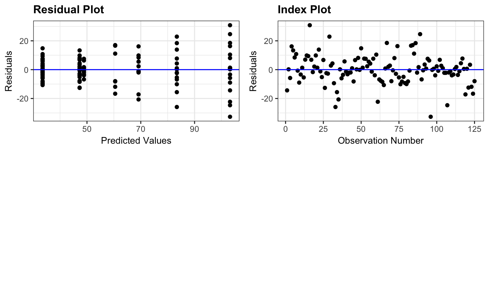
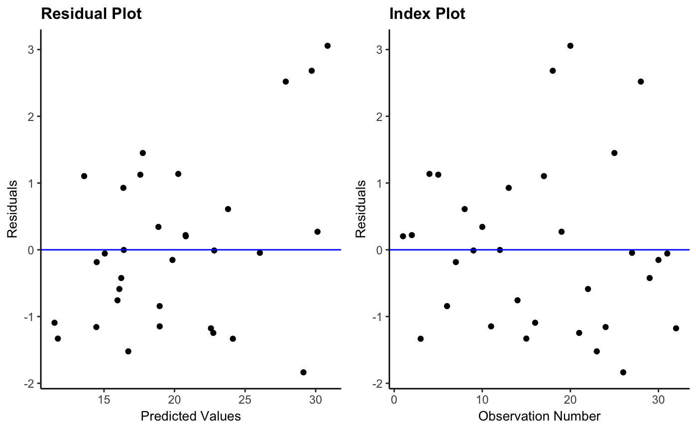

resid_auxpanel.RdCreates a panel of residual diagnostic plots given inputs of residuals and fitted values.
resid_auxpanel(residuals, predicted, plots = "default", bins = NA, smoother = FALSE, qqline = TRUE, qqbands = FALSE, scale = 1, theme = "bw", axis.text.size = 10, title.text.size = 12, title.opt = TRUE, ind.ncol = 2)
| plots | Plots chosen to include in the panel of plots. (See details for options.) |
|---|---|
| bins | Number of bins for histogram of the residuals. |
| smoother | Indicates whether or not to include a smoother on the residual plot. Specify TRUE or FALSE. Default is set to FALSE. |
| qqline | Indicates whether to include a 1-1 line on the qq-plot. Specify TRUE or FALSE. Default is set to TRUE. |
| qqbands | Indicates whether to include confidence bands on the qq-plot. Specify TRUE or FALSE. Default is set to FALSE. |
| scale | Scales the size of the graphs in a panel. Takes values in (0,1]. |
| theme | ggplot2 theme to be used. Options are |
| axis.text.size | Specifies the size of the text for the axis labels of all plots. |
| title.text.size | Specifies the size of the text for the titles of all plots. |
| title.opt | Indicates whether or not to include a title on the plots. Specify TRUE or FALSE. Default is set to TRUE. |
| ind.ncol | Sets the number of columns in the panel when more than one individual plot has been specified. Default is set to 2 columns. |
| resid | The residuals from the model. |
| pred | The fitted values from the model. |
A panel of residual diagnostic plots containing plots specified.
The following grid options can be chosen for the plots
argument.
"all": This creates a panel of all plot types included in the package
that are available for resid_auxpanel. (See plot descriptions under
individual options.)
"SAS": This is the default option. It creates a panel of a residual plot, a normal quantile plot of the residuals, a histogram of the residuals, and a boxplot of the residuals. This was modeled after the residpanel option in proc mixed from SAS version 9.4.
A vector of individual plots can also be specified. For example, one
can specify plots = c("boxplot", "hist") or plots = "qq". The
individual plot options are as follows.
"boxplot": A boxplot of residuals
"hist": A histogram of residuals
"index": A plot of residuals versus observation number
"qq": A normal quantile plot of residuals
"resid": A plot of residuals versus predicted values
Details on the creation of the plots can be found in the details section of
the help file for resid_panel.
# Fit a linear regression model to predict the volume of a tree based on the # girth of a tree using the R "trees" data lm_model1 <- lm(Volume ~ Girth, data = trees) # Plot the residuals using the default panel resid_auxpanel(resid(lm_model1), fitted(lm_model1), bins = 30)# Fit a random forest model to the mtcars data to predict the mpg rf_model <- randomForest::randomForest(x = mtcars[,2:11], y = mtcars[,1]) # Obtain the predictions from the model on the observed data rf_pred <- predict(rf_model, mtcars[,2:11]) # Obtain the residuals from the model rf_resid <- mtcars[,1] - rf_pred # Create a panel with the residual and index plot resid_auxpanel(rf_resid, rf_pred, plots = c("resid", "index"), theme = "classic")